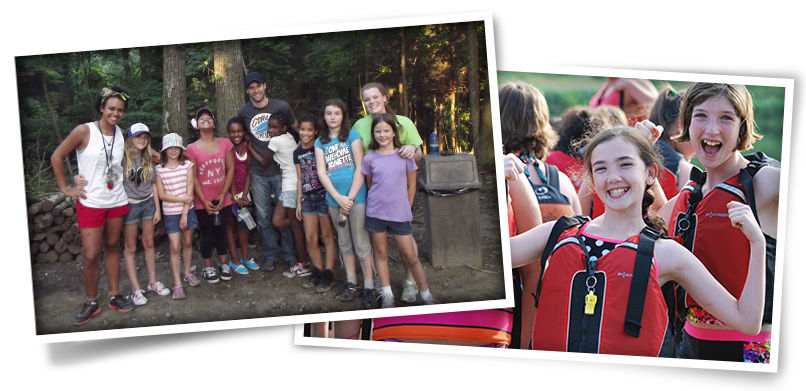

The Tim Horton Children's was founded by Tim Hortons co-founder, Ron Joyce, in 1974. He established the foundation in honour of Tim Horton's love for children and his great desire to help the less fortunate.
The foundation is a non-profit, charity based organization. It is committed to provide a fun and unforgettable camp environment for children who are less fortunate. Through the year, selected local children from communities in which different Tim Hortons stores operate give thousands of children the oppurtunity to participate in one the Tim Hortons life-changing camps.
This year along, the Foundation is aiming to serve over 14,000 children from less fortunate homes. Together with the everyone's support, they are truly making a difference in these childrens lives.
